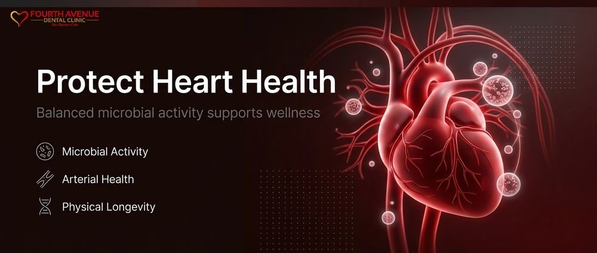

Why We Look at Your Oral Microbiome to Protect Heart Health
Dental Diagnostics · Heart Health · Oral Microbiome · Preventive Dentistry

At Fourth Avenue Dental Clinic, our clinical philosophy centers on the reality that the mouth does not exist in isolation from the rest of the body. When patients enter our practice, they often view cleanings and exams strictly as mechanisms to prevent surface cavities or maintain bright smiles. However, modern clinical science reveals a direct physiological pathway connecting oral bacteria to vascular health. By evaluating microbial populations within the mouth, we uncover early biological indicators that influence systemic cardiovascular wellness.
Cardiovascular disease remains one of the most serious long-term health concerns facing our communities across Vancouver and surrounding regions. Many individuals diligently monitor their cholesterol profiles, blood pressure metrics, and dietary habits without realizing that persistent inflammation in their gums silently undermines those efforts. Our team evaluates these hidden risks before they produce structural vascular damage. We utilize advanced assessment methodologies to identify bacterial imbalances in the oral cavity that actively circulate through the bloodstream.
By expanding standard evaluations into targeted assessments of the mouth bacteria heart connection, our practice provides an essential layer of whole-body protection. Understanding the delicate balance of your oral ecosystem allows us to intervene long before systemic consequences develop. Protecting your arterial health begins with rigorous attention to the tissues and microorganisms living inside your gum pockets.
The Biological Foundations of Oral Microbiome Health
The oral cavity hosts billions of microorganisms representing hundreds of distinct strains. In a balanced state, this diverse biological community works harmoniously to break down food, protect against environmental pathogens, and maintain mucosal integrity. This baseline of stable oral microbiome health is your initial defense against systemic inflammatory cascade events. When disruptions occur, pathogenic strains multiply rapidly, shifting the microenvironment from protective to destructive.
Microbial dysbiosis inside the mouth typically begins beneath the gumline, where oxygen-depleted periodontal pockets create ideal breeding grounds for aggressive anaerobic species. Pathogens such as Porphyromonas gingivalis, Treponema denticola, and Tannerella forsythia thrive in these low-oxygen spaces. As these bacteria establish dense colonies, they produce harmful enzymes and lipopolysaccharides that irritate and degrade adjacent soft tissues. This localized tissue degradation compromises the delicate mucosal barriers separating your mouth from the systemic circulatory framework.
We examine these microbial colonies directly because their activity extends far beyond local gum swelling. When the structural integrity of the periodontal pocket weakens, bacteria and their inflammatory byproducts gain immediate access to capillaries. This systemic dispersion transforms an isolated dental issue into an active, circulatory inflammatory challenge. Identifying these specific microbial species allows our team to address chronic bacterial stress before it exerts pressure on peripheral vascular networks.
Preserving oral microbial stability requires targeted diagnostic protocols that assess more than just visible plaque buildup. Standard mechanical cleanings clear visible deposits, but persistent subgingival bacteria can remain deeply entrenched. Through comprehensive biological evaluation, we pinpoint underlying imbalances, allowing us to implement focused treatments that neutralize aggressive pathogens while protecting beneficial oral flora.
How Mouth Bacteria Enter and Damage the Vascular System
The mouth bacteria heart connection operates through direct biological transmission and secondary inflammatory responses. Everyday activities such as chewing firm foods, brushing, or flossing can introduce subgingival pathogens into microcapillaries if the periodontal lining is ulcerated. Once these microorganisms enter general circulation, they travel rapidly across arterial pathways, interacting directly with vascular walls and triggering immune alarms.
When pathogenic oral bacteria encounter endothelial cells lining your blood vessels, they do not simply drift past passively. Specific species possess surface proteins that permit them to adhere to arterial walls, invading the underlying tissue layers. This cellular invasion causes local endothelial dysfunction, which reduces the blood vessel's ability to dilate smoothly. Over time, persistent microbial presence stimulates arterial walls to produce inflammatory cytokines, accelerating the formation of fatty plaques and arterial stiffening.
The immune system responds to circulating oral pathogens by deploying systemic inflammatory markers, including C-reactive protein and interleukin-6. High concentrations of these markers are well-documented clinical contributors to cardiovascular events. By allowing chronic oral infections to persist, the body remains in a heightened state of systemic immune tension. This ongoing state taxes heart muscles, accelerates plaque vulnerability, and increases the likelihood of arterial clot formation.
Clinical examinations of atherosclerotic plaques removed during cardiovascular surgeries frequently reveal direct DNA traces of oral bacteria. The presence of Porphyromonas gingivalis within coronary plaques demonstrates that oral bacteria actively integrate into vascular lesions. Our diagnostic evaluations seek to halt this process at its origin, ensuring that harmful microbial strains never establish arterial footholds.
Advanced Preventive Dental Diagnostics for Systemic Protection
Traditional dental examinations primarily rely on visual inspection and periodontal probing depths. While these physical metrics remain foundational, modern preventive dental diagnostics allow us to evaluate oral health at the molecular and microbial levels. By identifying specific bacterial strains before clinical attachment loss or arterial compromise manifests, we offer patients a preventative window that standard evaluations cannot match.
Our diagnostic protocols utilize salivary testing and microbial sampling to assess pathogen loads accurately. These diagnostic methods provide definitive profiles of harmful microorganisms residing within the mouth:
- High-risk pathogen identification, which pinpoints the presence of destructive bacterial strains directly associated with vascular wall inflammation and arterial plaque instability.
- Quantification of bacterial volume, measuring pathogen concentrations to determine whether microbial activity poses an acute systemic threat.
- Inflammatory biomarker screening, which measures localized immune responses within oral tissues before physical tissue destruction becomes visible.
- Genetic susceptibility indicators, evaluating individual host responses to bacterial challenges to determine personal risks for systemic complications.
By interpreting these diagnostic findings within a broader health framework, our clinicians design highly specific therapies that address exact microbial targets. Rather than relying on generalized treatments, we apply selective antimicrobial therapies, focused subgingival debridement, and personalized maintenance regimens. This scientific approach eliminates guesswork, ensuring that therapy directly curbs the pathogenic strains most dangerous to cardiovascular structures.
Implementing comprehensive diagnostics provides actionable data that bridges dental care and internal medicine. We track shifts in microbial populations over time, evaluating how our treatments actively reduce systemic bacterial exposure. Patients gain objective clarity regarding their oral biological health, reinforcing the direct impact our procedures have on safeguarding their heart function.
The Interplay Between Periodontal Disease and Arterial Health
Periodontal disease is a chronic inflammatory disorder that affects the supporting structures of the teeth. Left unchecked, the cumulative surface area of ulcerated tissue within diseased gum pockets can equal the size of an adult palm. Having an open, chronically infected biological surface of that magnitude inside the head continuously exposes vascular channels to bacterial toxins, making arterial health virtually impossible to preserve without intervention.
Chronic inflammation arising from untreated gum tissues promotes systemic hypercoagulability, meaning the blood becomes more prone to forming dangerous clots. Bacterial endotoxins stimulate platelets to aggregate, increasing blood viscosity and vascular resistance. For individuals already managing arterial hypertension or borderline coronary issues, this additional biological stress significantly elevates the risk of heart attacks and ischemic strokes.
Furthermore, periodontal inflammation directly disrupts lipid metabolism, creating an unfavorable shift in blood chemistry. Patients suffering from active periodontal conditions frequently exhibit higher levels of oxidized low-density lipoproteins and triglycerides. These altered lipids penetrate vascular walls more aggressively, feeding the core of atherosclerotic plaques and making them prone to sudden rupture. Treating periodontal infections removes this chronic driver of lipid oxidation, helping stabilize systemic chemistry.
Our clinical approach addresses both the micro-environment within periodontal pockets and its broader physiological impact. By thoroughly clearing bacterial reservoirs and helping patients maintain tissue integrity, we remove a chronic source of systemic inflammation. Restoring health to the gum architecture directly relieves cardiovascular tissues from relentless immune strain.
Daily Strategies to Support Oral and Cardiovascular Harmony
In-office treatments establish microbial balance, but daily oral hygiene practices sustain that stability long-term. Protecting both oral microbiome health and your vascular system demands disciplined daily habits combined with professional monitoring. We guide our patients in building routines that disrupt harmful bacterial biofilms without obliterating beneficial organisms necessary for oral protection.
To maintain peak oral and vascular alignment, consider implementing these evidence-supported practices every day:
- Practice meticulous interdental cleaning using unwaxed floss or interdental brushes, ensuring subgingival plaque colonies are mechanically disrupted every single day.
- Utilize soft-bristled automated toothbrushes with precise oscillating or sonic motions to remove pathogenic biofilms without causing micro-trauma to fragile gum tissue margins.
- Avoid harsh alcohol-based mouthwashes that indiscriminately wipe out beneficial bacteria, as these disruptions can impair natural oral nitric oxide production and adversely affect blood pressure regulation.
- Incorporate oral probiotics and tongue scraping to maintain balanced microbial populations across the mucosal tissues of the tongue and palate.
- Maintain steady hydration throughout the day to support salivary flow, which naturally delivers protective enzymes and mineral buffers to vascularized oral surfaces.
Nutrition also plays a decisive role in balancing the oral microbiome. Diets heavy in processed carbohydrates and refined sugars feed destructive acid-producing and anaerobic bacterial species. Conversely, consuming nutrient-dense whole foods rich in antioxidants, fiber, and omega-3 fatty acids reduces inflammatory burdens within the gums and strengthens arterial linings against circulating bacterial challenges.
Consistency remains the most influential factor in maintaining biological stability. When effective daily hygiene habits work in concert with targeted clinical care, microbial communities remain stable and non-threatening. This deliberate coordination creates a protective shield that preserves your smile while supporting long-term heart health.
A Collaborative Path Toward Comprehensive Wellness
Achieving optimal health requires recognizing the deep biological connections linking every system in the body. At Fourth Avenue Dental Clinic, our dedication extends beyond performing traditional dental procedures; we are committed to supporting your comprehensive vitality. By evaluating your oral microbiome, analyzing the mouth bacteria heart connection, and executing advanced preventive dental diagnostics, we provide thoughtful, systemic care designed for long-term health.
Our welcoming clinical environment in Vancouver offers the advanced diagnostics and compassionate expertise needed to address these intricate biological risks. If you are ready to evaluate your oral microbial health and reinforce your cardiovascular protection, contact our team directly at appts@4thavenuedental.ca to schedule a comprehensive clinical assessment.
Ready to book a visit?
1905 West 4th Avenue, Kitsilano. Book online or call the clinic.